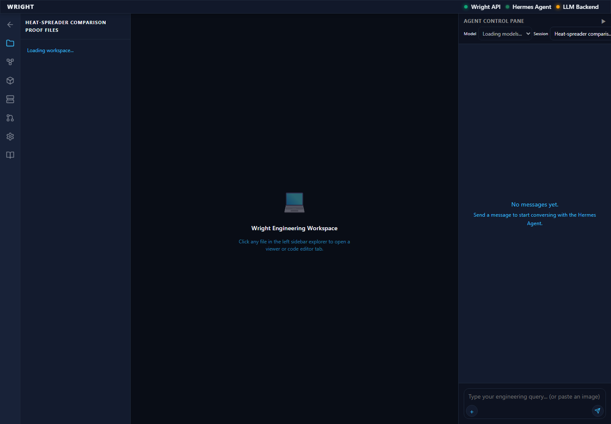
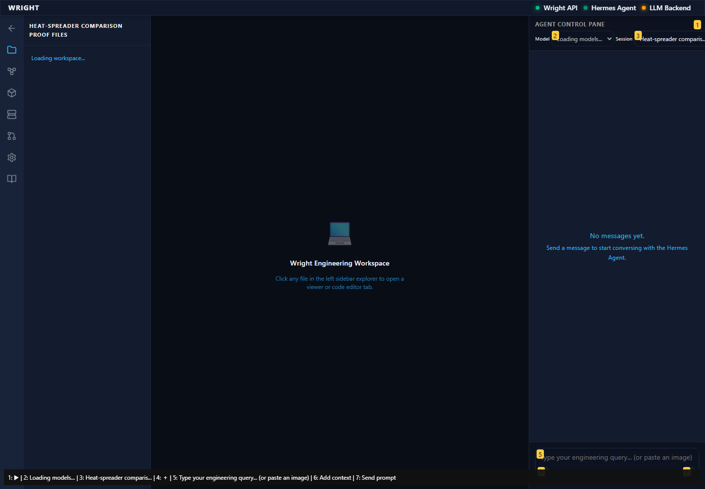
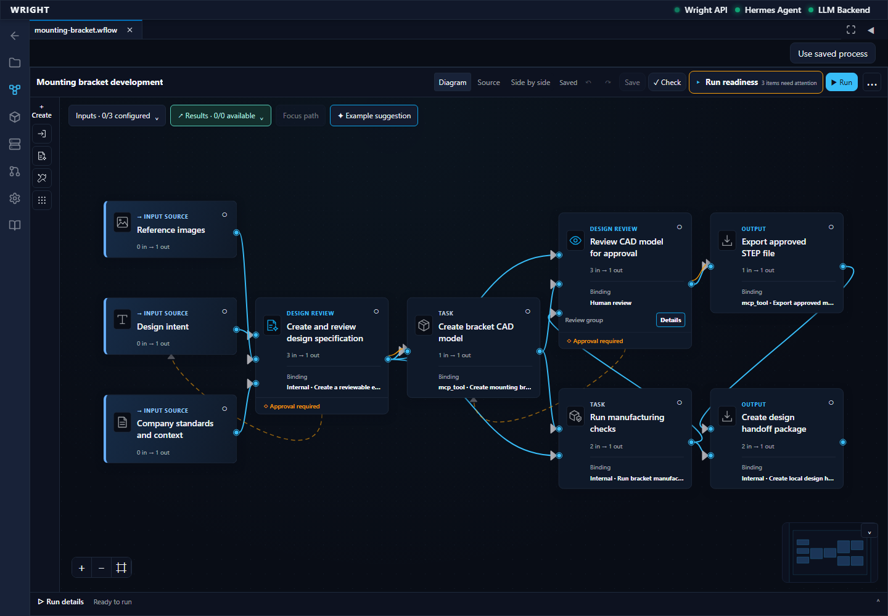
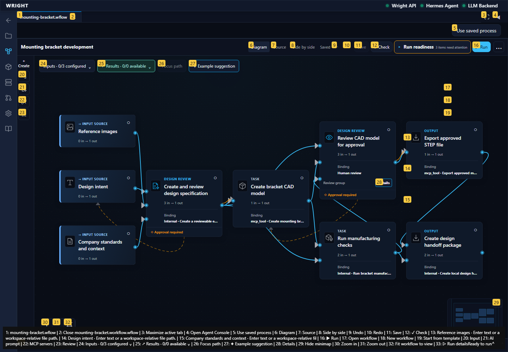
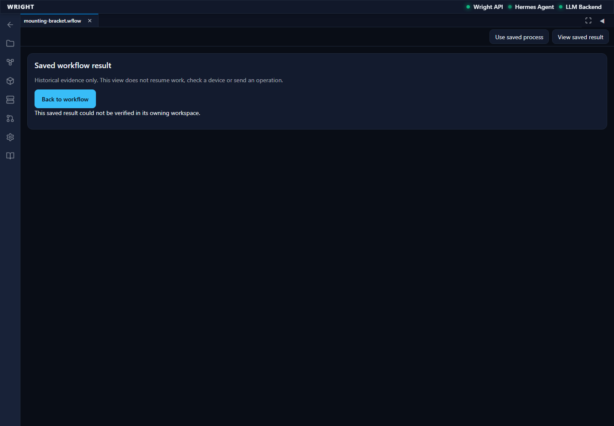
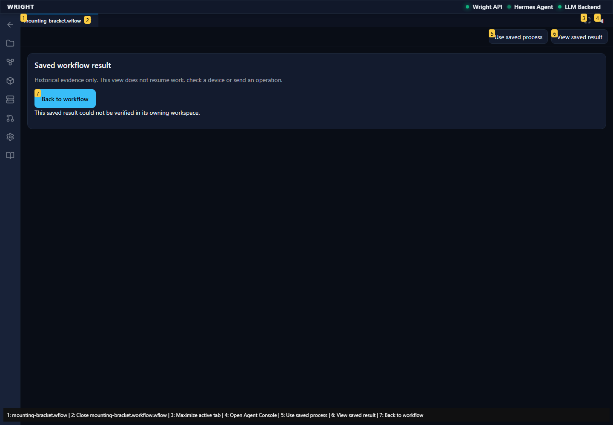

Exact retained failed native run, saved outputs and file tabs; no active vendor panel or process replay.
Status: blocked
Normal workspace loads.
Expected: Workflows visible.
Actual: Workflows visible.
raw 
annotated 
Established workflow editor remains; the active vendor demo entry is absent.
Expected: Editor controls without active print demo.
Actual: Editor controls present; Print a part demo absent.
raw 
annotated 
First unexpected historical result retained.
Expected: Exact saved history and workspace navigation.
Actual: expect(locator).toBeVisible() failed Locator: getByText('Recorded run: a87d84b40a244bcaa035d9ed8308ac5a · failed', { exact: true }) Expected: visible Timeout: 60000ms Error: element(s) not found Call log: - Expect "to.be.visible" with timeout 60000ms - waiting for getByText('Recorded run: a87d84b40a244bcaa035d9ed8308ac5a · failed', { exact: true })
raw 
annotated 